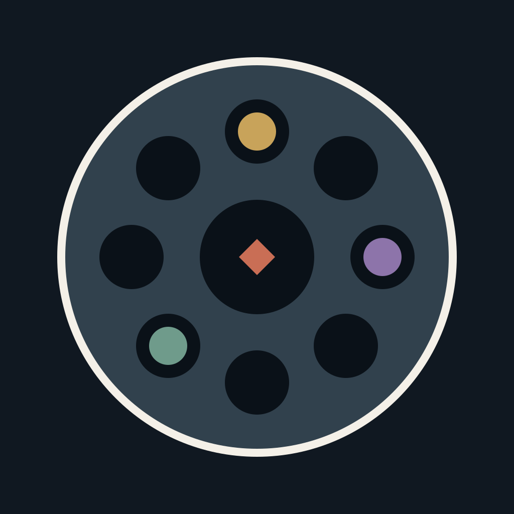
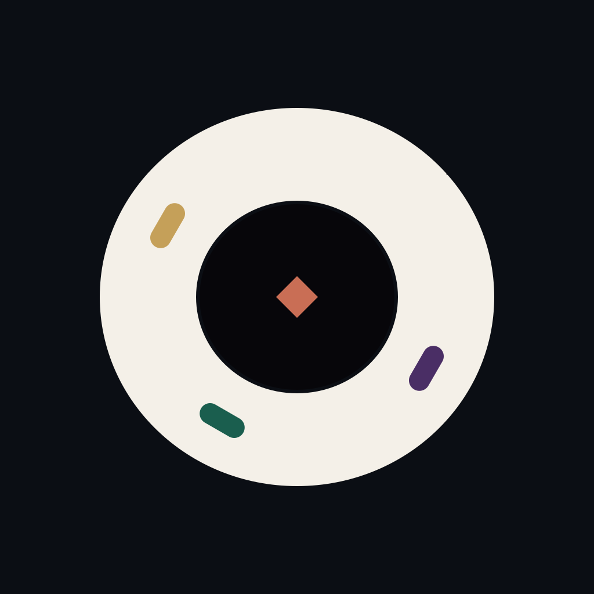

v5 - Brettdiagramm
Regelgetreu, aber zu wörtlich. Die acht schwarzen Mulden dominieren und erinnern an eine Drehscheibe.
v6 löst sich vom Brettdiagramm. Eine Kerbe drückt sichtbar in den geschlossenen Ring, die ruhige Mitte hält den Einsatz, drei gleich große Inlays setzen den Rhythmus der Runde.

Regelgetreu, aber zu wörtlich. Die acht schwarzen Mulden dominieren und erinnern an eine Drehscheibe.

Die Kerbe ist das Pochen. Der Ring bleibt geschlossen; drei flache Emaille-Einlagen verteilen den Spielrhythmus, ohne ein Brett zu illustrieren.
Die Silhouette bleibt bei 24 Pixeln eindeutig. Farbe ist ein Spielakzent, keine Voraussetzung. In der einfarbigen Fassung werden die drei Inlays zu feinen Gravurschlitzen; Kerbe, Ring und Mittelpunkt bleiben vollständig erhalten.